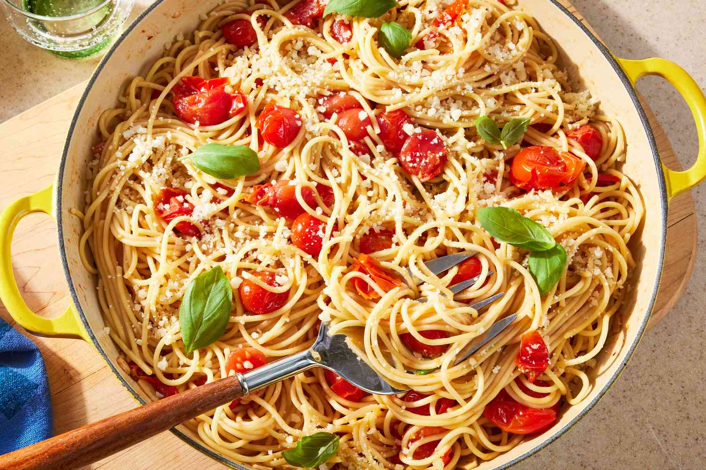

RECIPE TO MAKE A PASTA

Pasta is a staple Italian food made from unleavened dough of wheat flour, water, and sometimes eggs,
formed into various shapes like spaghetti or lasagna, and then cooked. It is broadly categorized into
two types: dried, often produced commercially, and fresh, typically made by hand or with machines.
Pasta can be cooked and served with sauces, stuffed with ingredients, or used in soups and casseroles,
providing energy and fiber.
Ingredients
- ½ lb whole-wheat small pasta shells
- 2 cups white corn, thawed
- 6 scallions, thinly sliced
- 1 yellow or orange bell pepper, seeded and diced
- 2 cups cherry tomatoes, halved
- ½ cup Cashew Mayo or Reduced Fat Vegenaise
- ¼ cup Tofutti sour cream
- ¼ cup lemon juice
- 2 tsp salt
- ¾ cup fresh dill, minced
Instructions
- Cook pasta according to package instructions and place in a large bowl with corn.
(If using fresh corn, add the corn to the boiling pasta water about 2 minutes before
the pasta is cooked, then drain with the pasta.) Then, add the scallions, diced pepper,
and tomatoes, tossing gently to combine. Set aside to cool.
- While the pasta is cooling, whisk together the Vegenaise, sour cream, lemon juice, and salt.
Pour the mixture over the pasta and mix well to incorporate the ingredients.
Stir in the dill and salt to taste.
- Cover with clear wrap and chill for 4-6 hours to let the flavors marinate. Serve chilled.